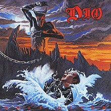

Dio's kändaste album "Holy Diver" är ett verk som tilltalar en bred publik inom heavy metal-genren, men har särskild betydelse för fans av klassisk heavy metal och hårdrock. Målgruppen för detta album kan sägas vara främst de som uppskattar kraftfulla gitarriff, melodisk sång och välformade låtstrukturer.
"Holy Diver" lockar till sig lyssnare som är intresserade av texter som utforskar teman som kamp, överlevnad och mörka mystiska världar. Dio, med sin karaktäristiska röst och karisma, lockar även till sig dem som uppskattar ikoniska sångare och frontfigurer inom rockmusiken.
